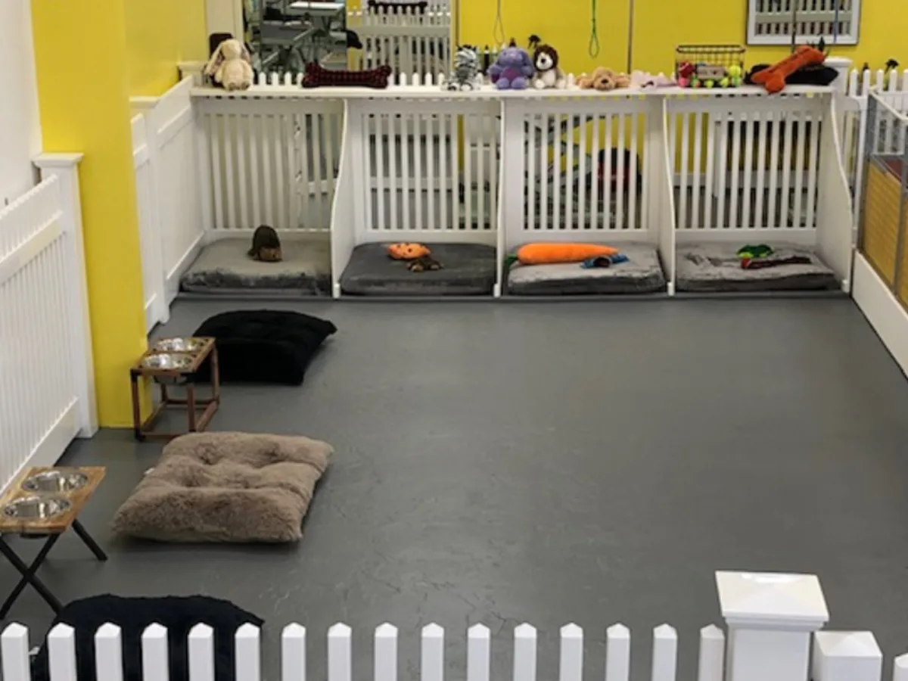
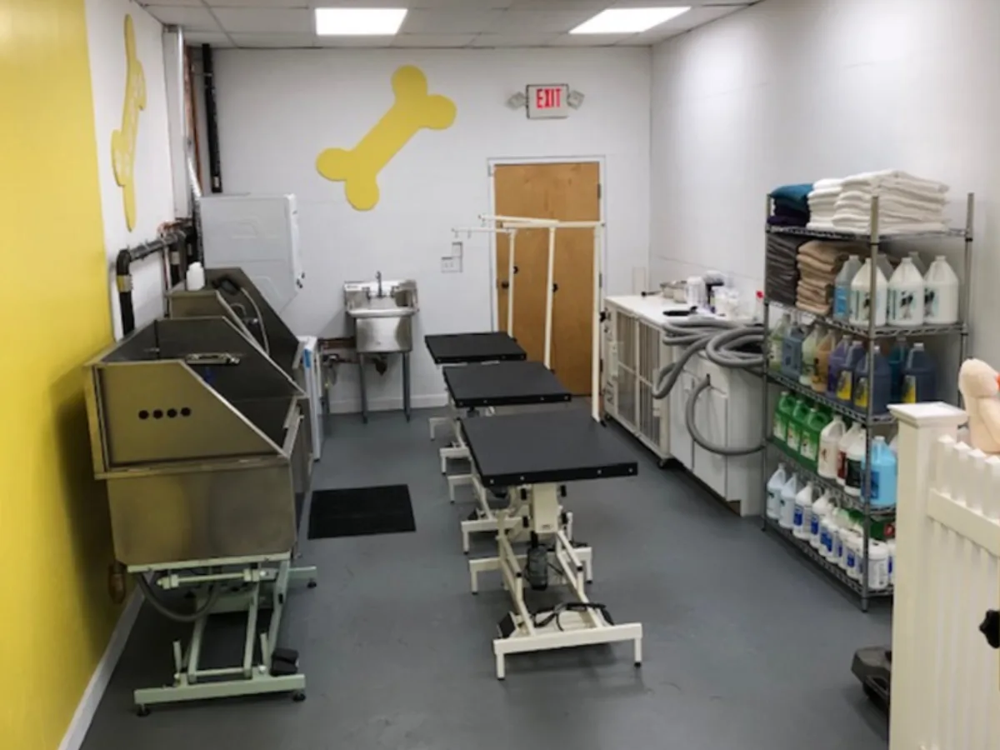
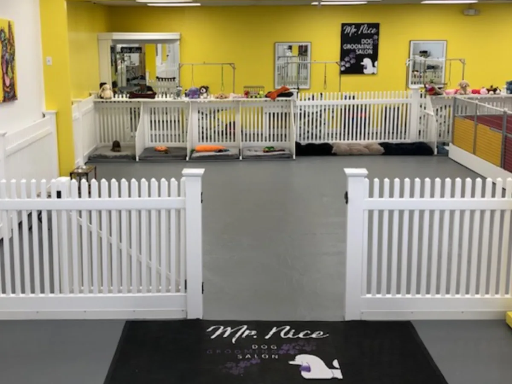

About Mr. Nice Dog
Pride and commitment to the art of dog care — from a family that has bred and trained dogs for generations.


Pride and commitment to the art of dog care
It has always been my dream to open a full-service dog salon ever since I was a young adult. At a very early age I was surrounded by animals because my parents and grandparents bred and trained dogs for their livelihood. When I was around 9 years old I realised my love and passion for dogs whenever I was in their presence. I began helping and working alongside my family when I was not attending school. As a teenager I took on more responsibilities within my family’s business to expand my knowledge in every aspect of dog care.
To further develop my skills, I moved to the US in 1993 to work alongside a well-renowned dog breeder and groomer based right here in New England. I apprenticed and worked there for 22 years, becoming a master trainer. During this time I competed at numerous dog shows throughout the country and won several awards in the “Best of Breed” category. I also competed at the prestigious Westminster Kennel Club Dog Show in New York, where I won “Best of Breed” and “Group Placement” awards multiple times.
I moved to Massachusetts in 2006 to further develop my dog grooming abilities. Over the years I worked for notable dog salons in and around Boston as a means to refine my grooming skills and techniques.
It is so exciting to now open my full-service dog salon that offers the best there is in dog grooming, training and daycare services. I welcome you to come by, check us out and take a tour of our salon.
Antonio Torres
Founder & Owner
The naming of my business
When it came to choosing a name for my new business, I tossed around several ideas. What came to mind was how my clients would often say to me how wonderful and “nice” their dog looked after being groomed and cared for. I was so pleased that they appreciated and liked my work. For me, nothing is better than hearing someone call the work I do “nice”! I knew that “Mr. Nice Dog Grooming and Spa” was a perfect name for my business.
A best-in-class dog spa
“Offering grooming, daycare and training services with our commitment to provide exceptional service.”




Ready to spoil your best friend?
Grooming is by appointment. Give us a call and we'll find a time that suits you and your dog.